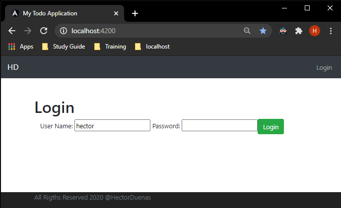
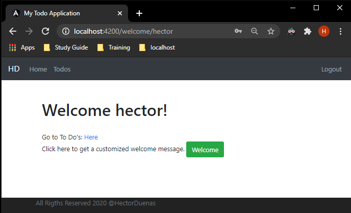
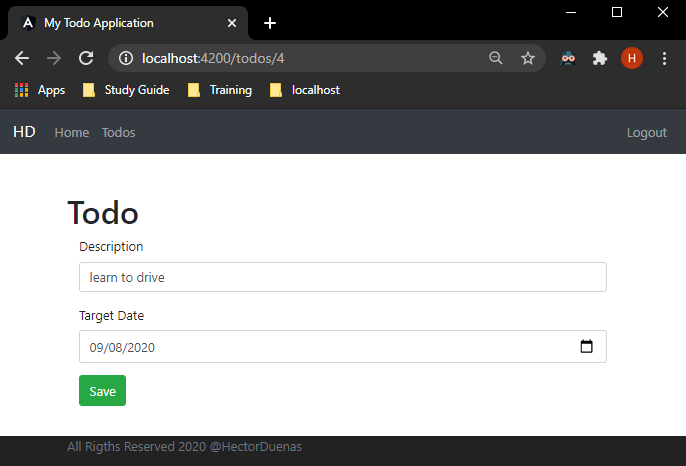
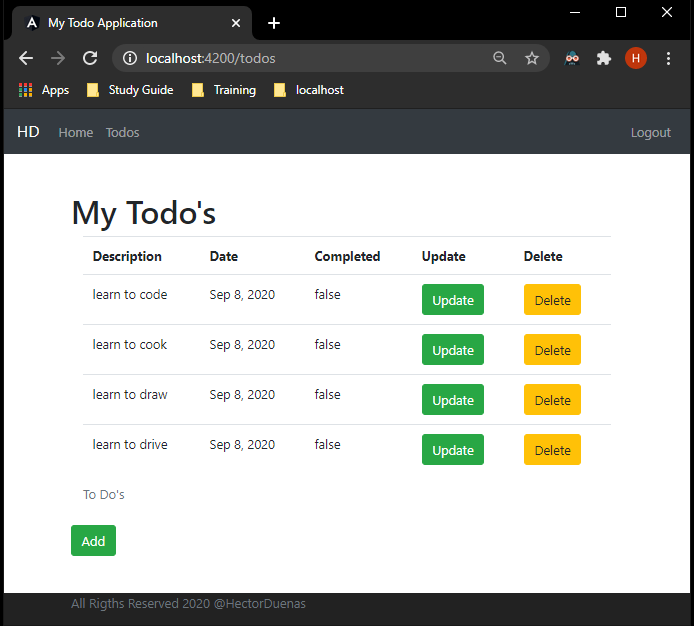
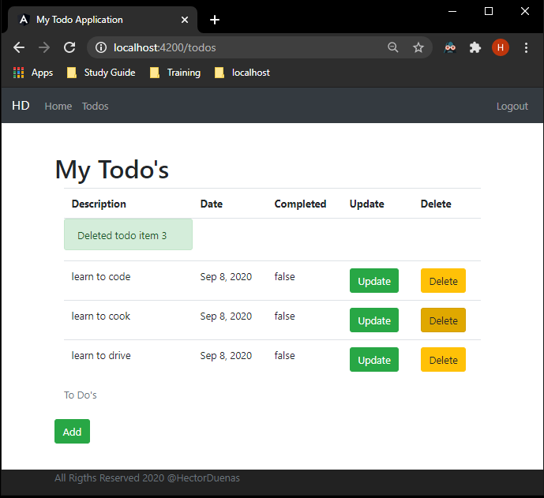
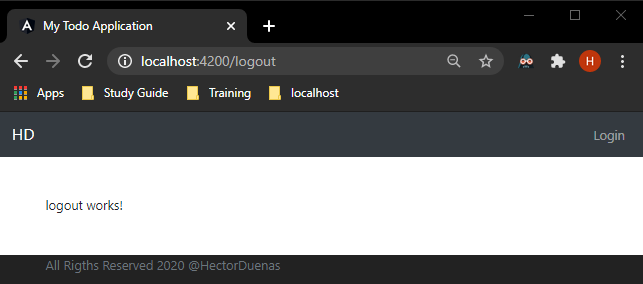

To-Do Web Application
Summary
To-Do Web Application
2020
Tempe, AZ
The To-Do Web Application is a tool that was created to help keep track of To-Do items and by when they need to be completed. I began developing this project to get an understanding of how to build a full stack application. I used Spring Boot as the backend for the API calls and used Angular to create the user interface of the application. The reason why I used Spring is because I wanted to understand one of Java's most popular frameworks. Using Angular was suggested to me since it interacts well with Spring and is a JavaScript framework that I have never used previously. This project has helped me learn about how the front end interacts with the backend of a service.
Technology
Web Application
Login.
Welcome page after loging into the system.
View To-Do's list.
Login.
The user is able to add a new To Do to their list.
 If a user is done with an item, they are able to delete it from the list.
Once the user is done, they are able to logout of the application.
